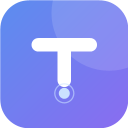

tapdot/ Tab Memory ManagerLast updated: 4 October 2026
Tab Memory Manager is built to be private by design. This policy explains what the extension does and does not do with your information.
Tab Memory Manager does not collect, transmit, sell, or share your tab or browsing data. Everything the extension does with your tabs happens locally, inside your own browser — no accounts, no analytics, no tracking. Every Pro feature (memory timeline, automation rules, snapshots, weekly digest, settings sync) also runs and stores its data entirely on your device. The only things ever sent off-device are, and only when you take the action yourself: whatever you type if you submit the optional feedback form, and your license key if you activate a Pro license. See below.
To do its job, the extension reads information about your currently open tabs — their titles, URLs, favicons, audio/pinned/discarded state, and last-active times. It also reads your device's total and available system memory. This information is used only to:
The extension saves the following locally on your device only, using Chrome's
storage API:
This data never leaves your browser. It is not sent anywhere, and it is not accessible to us or any third party.
The Settings page includes an optional "Support" form for bug reports and feedback. If — and only if — you type a message and click "Send", that message (and your email address, if you chose to include one for a reply) is sent to our form provider, Formspree (formspree.io). This never happens automatically, and if you never use the form, nothing is ever transmitted. We use it solely to read and respond to what you sent; it is not sold, shared, or used for marketing. Formspree processes the submission on our behalf; see Formspree's own privacy policy for how they handle form data.
If you activate a Tab Memory Manager Pro license, the license key you enter is sent to our payment processor, Lemon Squeezy (lemonsqueezy.com), solely to verify it and unlock Pro features on your device. No tab, browsing, or usage data is included in that request. If you never activate a license, nothing here is ever transmitted. See Lemon Squeezy's own privacy policy for how they handle license data.
(Pro) Settings sync, if you turn it on, mirrors your settings (whitelist, rules, thresholds) via your browser's own built-in sync storage (e.g. your Google or Firefox account) so they follow you to your other devices — the same mechanism your browser already uses to sync bookmarks. It is off by default.
processes, Chrome Dev/Canary only): if you enable
this, the extension reads real per-tab memory from Chrome's local process API. This data is used
only for on-screen display and never leaves your device.Both are off by default and requested only when you turn them on.
If this policy changes, the "Last updated" date above will be revised.
Questions about privacy? Email ceo@tapdot.org.